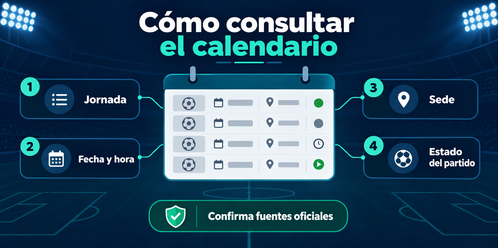

Puebla
VSLeón
Consulta el calendario del Apertura 2026 por jornada: próximos partidos, fecha y horario del centro de México. La programación se presenta por separado de los resultados confirmados.
La Liga MX vuelve del parón internacional del viernes 9 al domingo 11 de octubre. Los horarios están expresados en tiempo del centro de México; confirma cualquier cambio con el club o la competición antes del partido.
Verificar programación y horarios de la Jornada 11 en FOX Sports ↗

Este bloque conserva la programación registrada de la Jornada 9, disputada del 18 al 20 de septiembre. Como esas fechas ya pasaron respecto al corte manual actual, no se presentan como próximas. Para un nuevo calendario, confirma siempre el anuncio de la competición o del club antes de tomar una hora como definitiva.
También puedes consultar por separado la Jornada 8, la Jornada 9 y la página de próximos partidos.
Las horas publicadas usan la zona del centro de México. Cuando una hora todavía no está confirmada, se indica expresamente para no presentar una estimación como dato oficial.
Los horarios se muestran en tiempo del centro de México. Para resultados ya disputados usa resultados; para el efecto deportivo de la jornada, consulta la tabla general.
Esta página se revisa cuando existe información confirmada. Los datos dinámicos se separan de las explicaciones evergreen para no presentar una estimación como resultado oficial. Consulta las páginas enlazadas para calendario, resultados, tabla y contexto de fase final.
El calendario reúne jornadas, fechas y horarios confirmados. Para la competencia femenil consulta el calendario específico y evita mezclar ambos torneos.
Horarios, marcadores y posiciones pueden cambiar. Esta sección separa programación de resultados confirmados y muestra una fecha de revisión cuando el dato se actualiza. Antes de tomar una decisión de asistencia o transmisión, contrasta el partido con el anuncio oficial del club o la competición.
Consulta nuestras fuentes y metodología para conocer el alcance de la información y la forma de reportar una corrección.
Las fechas futuras pueden moverse por logística, seguridad o decisiones deportivas. La programación no sustituye el aviso oficial del organizador.
Abre el índice de jornadas para localizar una fecha concreta. Esta página destaca la programación disponible; una jornada anterior debe consultarse junto con sus marcadores.
La fase regular y la fase final son etapas distintas. Consulta el formato de Liguilla y la guía de la final; los cruces y horarios se muestran cuando se confirman.
Elige jornada, agenda de club o archivo de encuentros. Usa estos recorridos para pasar de la explicación general a la consulta concreta.
Estas fichas documentan encuentros de fechas anteriores. No se presentan como próximos partidos; revisa la edición y la fecha de cada ficha antes de utilizar su horario.